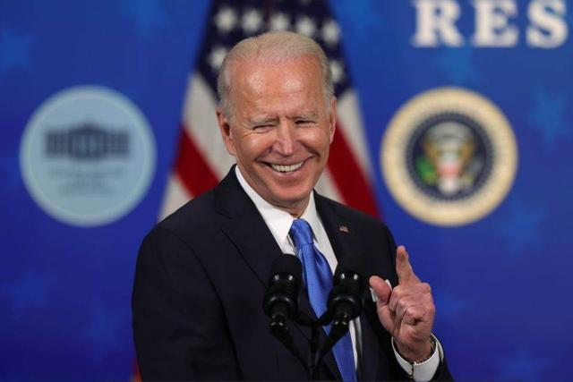
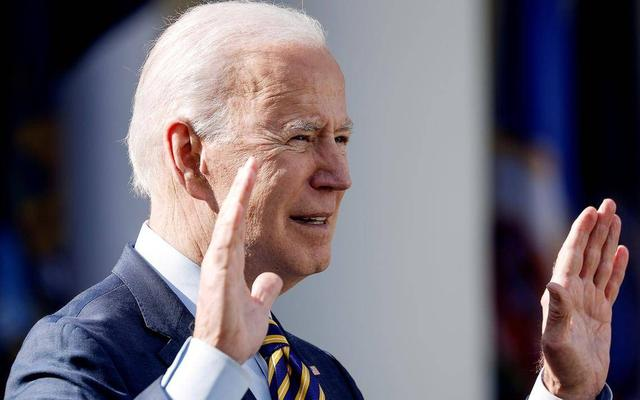

64天，拜登将创下一项美国总统纪录
东方网·纵相新闻记者 周安娜
白宫新闻秘书普萨基16日表示，美国总统拜登将于下周四（3月25日）举行上任以来的首次正式新闻发布会。
3月25日距离拜登就职总统已经64天。CNN称，拜登创下了过去100年来新总统不与媒体见面的最长纪录，前总统们
都是在上任后33天内就召开了新闻发布会。

白宫为拜登“迟到”的新闻发布会辩解称，总统目前的重点一直放在“确保每个美国人都有足够的新冠疫苗可以接种”，
以及上周刚刚签署的1.9万亿美元经济救助计划上面。
“我想美国人民肯定会理解。我们将在5月底之前做到这一点（指有足够疫苗为所有成年美国人接种），然后推动经济
救援计划，为近1.6亿美国人提供直接支票。”普萨基在本月早些时候的白宫简报会上这样说。
白宫指出，拜登已经在非正式场合接受过记者约40个提问。“总统每周都会接受几次提问。（记者）可以向他询问任何一
天发生的任何新闻。他期待继续这样做下去。”白宫副新闻秘书皮埃尔说道。

CNN称，拜登可能会在新闻发布会上面对一些棘手的问题，包括边境移民儿童的激增、新冠救济方案的实施以及政府为所
有美国人接种疫苗所做出的努力等等。
此前，拜登迟迟未举行新闻发布会的事情已经引起了美国国内的讨论。前白宫新闻秘书麦肯内妮上周曾建议拜登避开媒体，
以免造成失礼。拜登身边的工作人员也在“保护”他，以免在新闻发布会上面对与记者的即兴交流。
但福克斯新闻称，近期要求拜登直接向记者提供提问机会的压力一直在升温。
《华盛顿邮报》在上周已经开始催促：“现在是拜登召开新闻发布会的时候了。”白宫记者协会主席也向《名利场》杂志指
出，这种发布会“对让美国人民了解情况，让政府对公众负责至关重要”。
乔治·华盛顿大学媒体学院前院长塞斯诺则认为，拜登避免与记者接触，可能是避免失误的一种方式。“他（拜登）在这些
新闻发布会上表现并不出色。”塞斯诺说。
更多内容可以访问 百度新闻